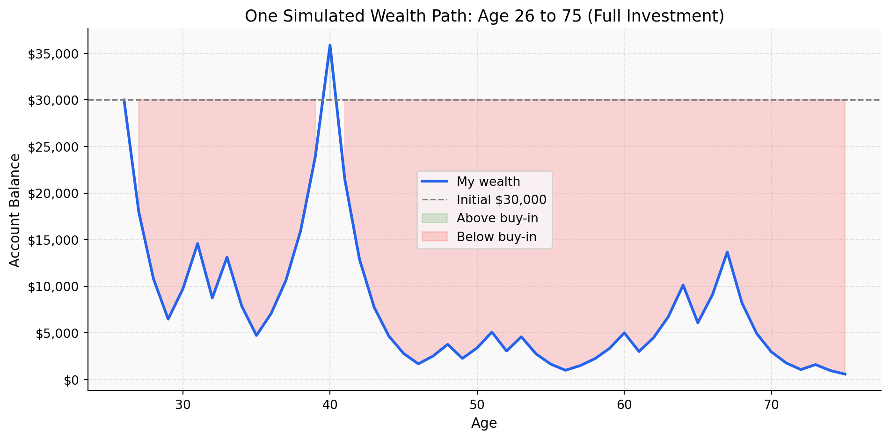
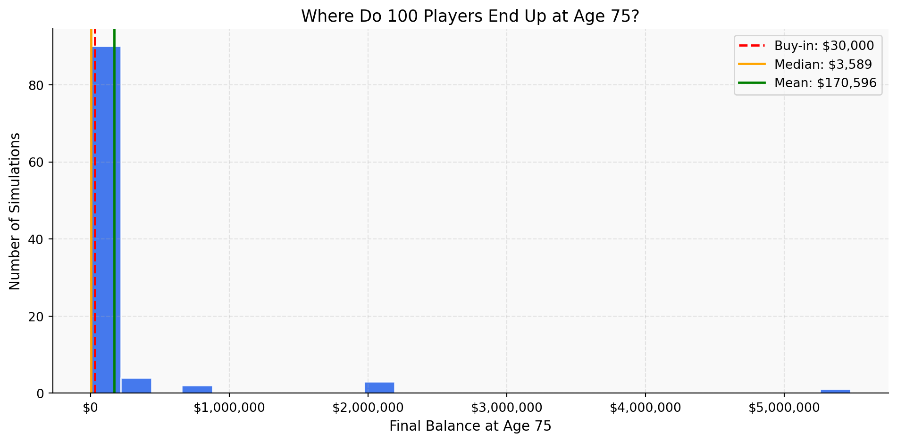
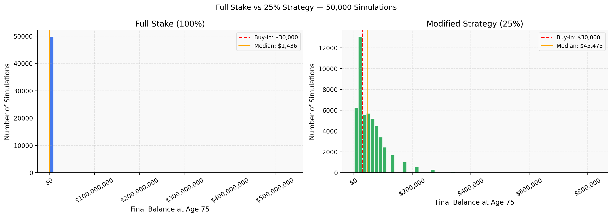
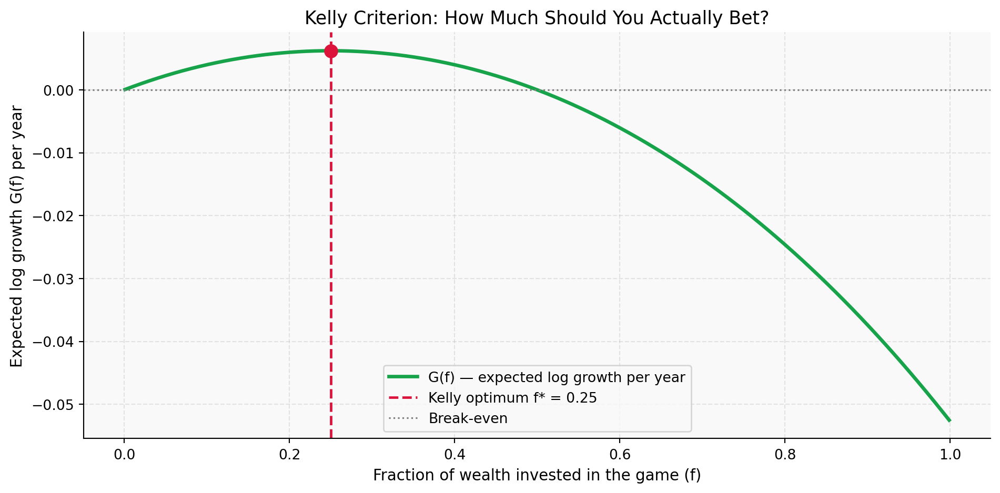

Should You Buy Into the Investment Game?
A Monte Carlo Simulation Analysis
The Game
Someone is offering me the chance to hand over $30,000 — money I actually have to earn and save — to play a coin flip game until I am 75. Every year: heads means my balance goes up 50%, tails means it drops 40%. That is 49 flips between now and retirement.
My first instinct was to do the math on expected value and call it a day. But the more I dug into the simulations, the more I realized this game is specifically designed to look attractive on the surface while quietly destroying most people who play it. Here is what the numbers actually show.
1) Expected Value After 1 Flip
After one flip, the expected balance is $31,500 — a 5% gain on my $30,000. The math is simple:
\[E[W_1] = 0.5 \times (\$30{,}000 \times 1.5) + 0.5 \times (\$30{,}000 \times 0.6) = \$33{,}000\]
Compounded over 49 years, the expected wealth at age 75 is:
\[E[W_{49}] = \$30{,}000 \times (1.05)^{49} \approx \$327\,640\]
If someone told me I could turn $30,000 into $327,640 by retirement, I would sign up immediately. And that is exactly the trap. This number is technically correct but practically useless — it is the average across millions of parallel universes, most of which I will never live in. I only get one life and one path through this game. The expected value tells me nothing about what will likely happen to me.
2) Single Simulation Over Time
This run ends at $574 at age 75 — I lost nearly everything.
But the ending balance is not even the most disturbing part. Look at the trajectory. By my early 30s the money is already mostly gone. I spend the next four decades watching a few thousand dollars bounce around near zero. There is no dramatic recovery. Just a slow grinding decline interrupted by brief moments of false hope.
Think about what that actually means in real life. At 35 I look at my account and it says $3,000. At 45 it says $800. This is not an investment — it is financial torture. No rational person sits through this for 49 years. The math does not account for the human cost of watching your savings evaporate over decades.
3) 100 Simulations: Distribution of Final Balances

Across 100 simulations: mean = $170,596, median = $3,589, and only 25% of players finished above $30,000.
The mean of $170,596 sounds great. But the median — $3,589 — is what actually describes a typical player. The mean is being destroyed by one or two astronomically lucky runs. Remove those outliers and the picture is grim.
This is the same logic as lottery jackpots. The expected value of a lottery ticket sounds reasonable when you factor in the $500 million prize — but the vast majority of tickets are worthless. This game works the same way. A handful of players who happened to flip heads most of the time walk away rich. Everyone else loses their $30,000.
4) Probability of Finishing Above $30,000
With 50,000 simulations, the probability of finishing above $30,000 is 19.6%. That means 80% of people who play this game lose money over 49 years.
This is not bad luck. It is the predictable mathematical outcome of a game where the geometric mean return is negative:
\[\sqrt{1.5 \times 0.6} = \sqrt{0.90} \approx 0.949\]
Every year, on average, my wealth gets multiplied by 0.949 — a 5% annual loss compounded 49 times. The arithmetic expected value is positive only because of extreme right-tail outcomes so rare they will almost certainly never happen to me personally.
If someone offered me a coin flip where I had a 80% chance of losing money over 49 years I would walk away. I would not buy into the full-stake game.
5) Modified Strategy: Bet Exactly 25% Each Round

What if instead of putting everything at risk every year I only bet 25% of my balance and kept 75% in cash?
| Full Stake | 25% Strategy | |
|---|---|---|
| Prob. finishing above $30,000 | 19.6% | 61.4% |
| Median final balance | $1,436 | $45,473 |
| Mean final balance | $275,550 | $55,145 |
The probability of profit jumps to 61.4% and the median outcome becomes $45,473. I actually come out ahead in the typical case.
Why does this work? With 25% exposure, a tails year only multiplies my wealth by \((1 - 0.25 \times 0.4) = 0.9\) and a heads year by \((1 + 0.25 \times 0.5) = 1.125\). The geometric mean per year is now \(\sqrt{0.9 \times 1.125} \approx 1.006\) — positive growth instead of negative. The game flips from being rigged against me to working in my favor just by reducing how much I bet. This is the version I would actually want to play.
6) The Kelly Criterion

There is a formula called the Kelly Criterion, developed by John Kelly at Bell Labs in 1956, that tells you exactly how much to bet to maximize your long-run wealth. The key insight is that it does not maximize expected value — it maximizes expected log wealth, which is what governs what actually happens to a real person over time.
For this game, the expected log growth per year when betting fraction \(f\) is:
\[G(f) = \frac{1}{2}\log(1 + 0.5f) + \frac{1}{2}\log(1 - 0.4f)\]
Maximizing this gives:
\[f^* = \frac{0.5}{0.4} - \frac{0.5}{0.5} = 1.25 - 1.00 = \mathbf{0.25}\]
The Kelly Criterion says bet exactly 25%. Look at the chart — the curve peaks at f = 0.25 and falls steeply in both directions. By the time you reach f = 1.0, the expected log growth is deeply negative. You are not just leaving money on the table by overbetting — you are actively destroying your wealth.
The original game forces you to bet 100% — four times the Kelly optimal. That single fact explains everything we saw in Sections 3 and 4. The Kelly Criterion does not just support the 25% strategy, it derives it from scratch. The number 25% is not a guess — it is the exact point where this game transitions from wealth-destroying to wealth-building.
Bottom Line
Do not buy into the full-stake game. If a 25% version exists, take it.
A game can have a positive expected value and still be a terrible bet for almost everyone who plays it. The expected value of $327,640 belongs to the rare few who flip heads most of their lives. For the other 80% of players the full-stake game is a near-certain path to losing their $30,000 over 49 years.
The 25% strategy fixes this. It brings the bet size in line with what Kelly recommends, converts the game from wealth-destroying to wealth-building, and raises the probability of profit to 61% with a median outcome of $45,473 at retirement.
The broader lesson: in any investment where returns compound — which is every real investment — how much you bet matters just as much as whether the odds favor you. Bet too much and you go broke even when the game is in your favor. The simulations prove it.